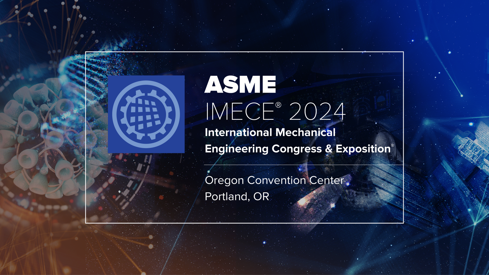
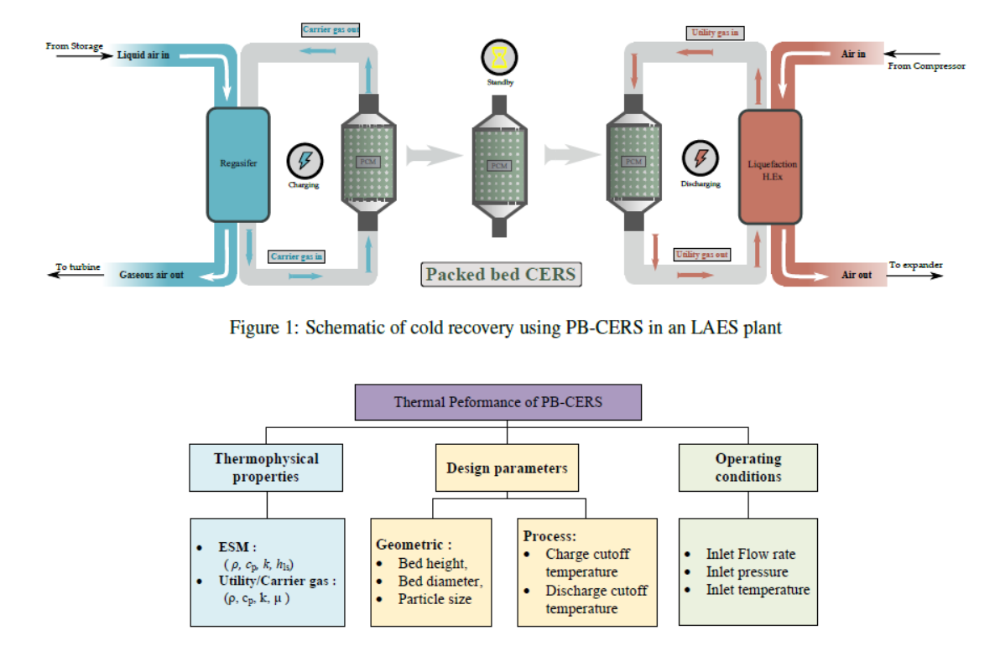
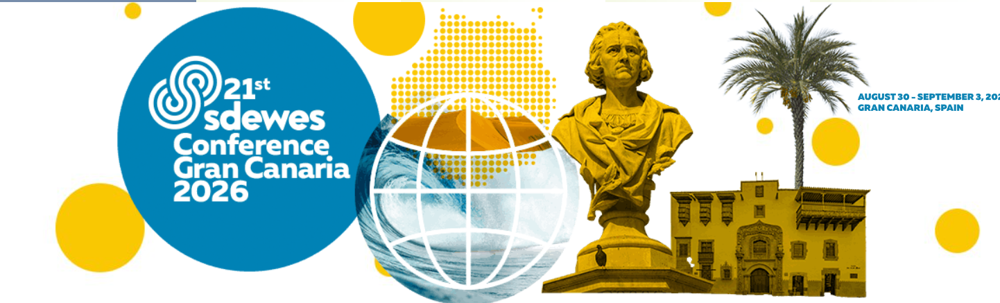
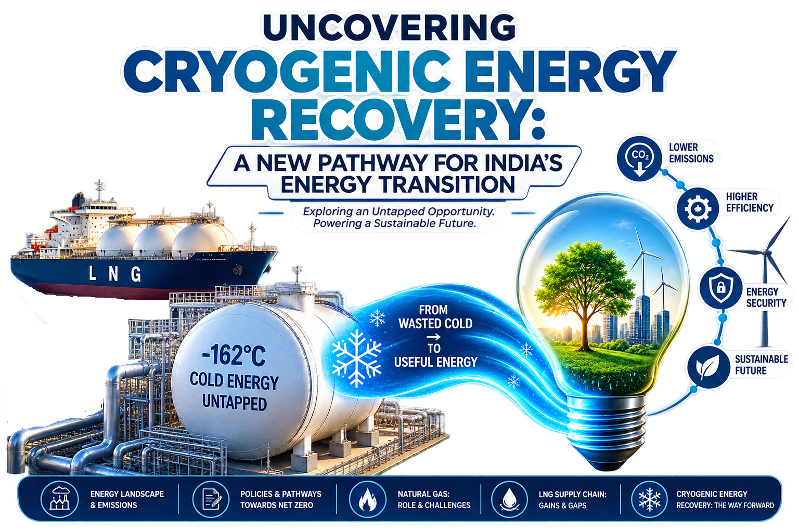
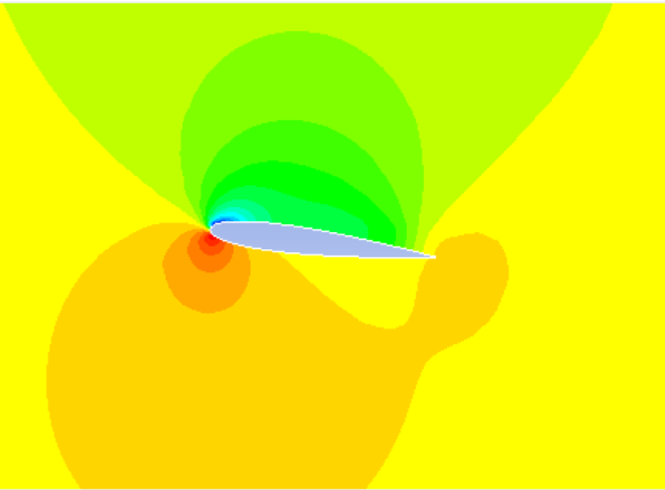

ASME IMECE 2024, Portland, USA
Optimal design of cascaded stages of packed beds for cryogenic energy recvoery

Cryogenic cold recovery is a key area of research with potential to significantly improve energy efficiency and reduce carbon footprint of process industries with refrigeration needs. Commonly these applications include gas liquefaction, cryogenic carbon capture, cold chain, freeze desalination etc. A vast amount of cryogenic cold of temperatures around -162 C goes is left unused on a large scale at LNG regasification termianls. In similair applications for heat recovery, Packed beds are a promising technology for cold recovery as they offer relaibilty, flexibility in operation. They act as a thermal battery/ buffer storage solutiosn until the need for cold arises. However, the thermal performance and feasibility of such systems for cryogenic cold recovery is not studied in detail.
The design of such systems which encompasses the selection of storage material, geometric and process parameters are cruciall to enable efficienct cold recovery. The ongoing work at the Process Intensification laboratory addresses the design and performance analysis of these systems, specifically packed beds with phase change materials (PCMs) as the storage medium. Both experimental and theoritical studies are undertaken. Various optimization frameworks are also explored to identify optimal design and operation strategies for these systems. You can find more details about the ongoing work and related publications below.

Optimal design of cascaded stages of packed beds for cryogenic energy recvoery

Machine learning based prediction of State of Charge of packed beds.

Second law performance of packed bed cryogenic energy recovery systems

A multi article deep dive into the potential of cryogenic energy recovery for India's energy trasnition.

Chilldown of cryogenic transfer lines — A CFD study.

CFD studies and supporting materials from undergraduate projects.